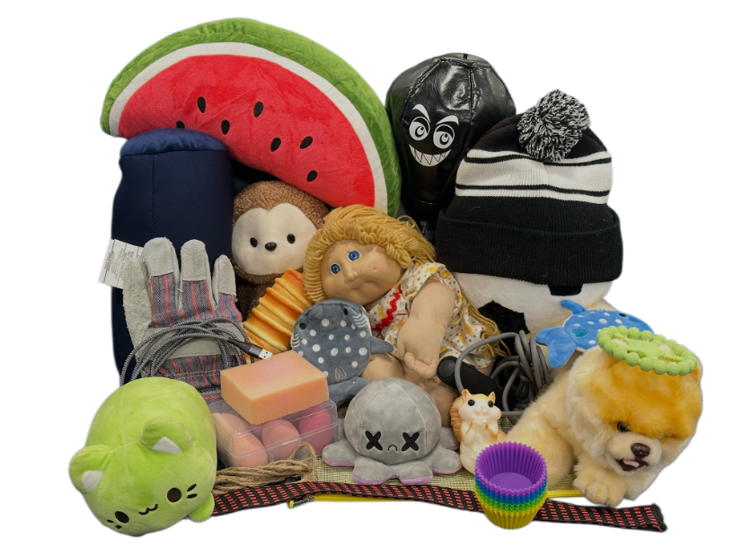
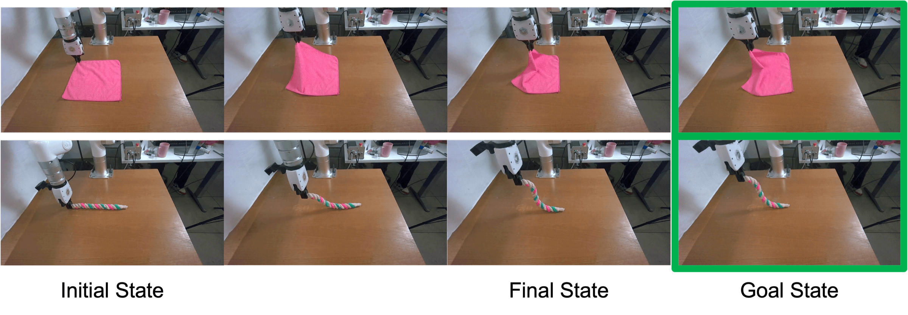

Executive Summary
Robot-learning data has long had eyes but no fingertips. Camera footage was abundant, but the resistance and slippage of the moment a hand touches an object mostly went unrecorded. Deform360, released at ECCV 2026 by a joint team from Brown, Columbia, and MIT, chose the hardest target of all: deformable objects like cloth, rope, cable, and plush toys, whose shape keeps changing as you grip them. This article looks at what the dataset fills in, and what questions it leaves for the design of robot-learning data.
At the core of its scale is this: 198 deformable objects recorded for 215.7 hours with 41 surround-view cameras and bimanual tactile grippers. But there is a more important contribution. On top of the same data, the team lined up the two representations of a robot world model side by side under controlled conditions: the 2D video approach and the 3D particle approach. Neither one always won. The winner shifted with the amount of data.
For anyone working with robot data, this result translates into a practical question. If your training data is small, a 3D representation with structural priors is favored; if it is large, a 2D representation that scales well pulls ahead. Deform360 shows, in the form of a reproducible benchmark, how the next frontier of AI-ready data is moving from "what hasn't been seen" to "what hasn't been touched."
Key Figures
The four numbers below compress what Deform360 captured, how much of it, and to what conclusion. The first three point to the scale of the data; the last points to the key finding confirmed with it.
Source: arXiv:2607.05390 · project page
198
deformable objects
1D·2D·3D shapes, 1,980 sequences
215.7 hrs
visuotactile recording
about 23.3M frames
41
surround-view cameras
synced with bimanual tactile grippers
3D↔2D
winner splits
less data 3D, more data 2D
Why Robots Learned Without Touch
Robot manipulation datasets were built around cameras for a long time. The reason is practical. Cameras are cheap and everywhere, and video is done once you store it. Recording the touch at a fingertip, by contrast, means attaching a sensor to the gripper, and that signal refreshes far faster than a camera, making it hard to align on the same time axis as the footage. Between collection difficulty, cost, and the synchronization problem, touch stayed outside the data for a long time.
This gap has already become a live topic in robotics research. In the first half of 2026 alone, work weaving touch and world models together appeared one after another, such as ContactWorld, Tactile-WAM, and OmniVTA. Pebblous, too, has previously covered a dataset in which AgiBot recorded the contact of failure moments—missed grasps, collisions, slips—as touch. The push to leave touch behind as data is already under way at the frontier.
Within that push, deformable objects are an especially thorny target. Rigid bodies like cups or blocks keep their shape while you pick them up, but cloth folds, rope stretches, and a plush toy compresses. Because the shape changes every instant, the degrees of freedom needed to represent its state explode, and the physics differs by material, making it hard to tie everything together under one rule. A person can fold a towel with their eyes closed, on fingertip feel alone, but erase that feel and the same motion becomes precarious. This is why data missing touch is uniquely shallow for robots that handle deformable objects.

This is exactly the point Deform360 aims at. Where AgiBot's data captured the texture of failure across varied manipulation, including rigid bodies, Deform360 focuses on one kind of object whose shape keeps changing—deformable objects—and records touch and 3D shape together. And it experiments head-on with how that data should be represented for a robot to learn well.
198 Objects, 215 Hours: The Scale of Deform360
Deform360 gathers 1,980 interaction sequences across 198 deformable objects, for a total of 215.7 hours and roughly 23.3M frames. The collection rig is 41 surround-view cameras encircling the object plus bimanual tactile grippers. While two arms fitted with tactile sensors actually grip and deform the object, dozens of cameras capture that moment from every angle at once. Overlaying vision and touch on the same object at this scale is the backbone of the dataset.
The objects are divided by the dimension of their shape. Line-like 1D objects such as rope, ribbon, cable, and chain number 28; sheet-like 2D objects such as cloth, airbags, plastic gloves, wrap, delivery bags, and bubble wrap number 98; and volumetric 3D objects such as plush toys, stress balls, sponges, and shoes number 72. It is a lineup that sweeps evenly across the spectrum of soft objects a robot has to handle in daily life, organized by shape.
2.1A Pipeline That Recovers 3D Shape Without Markers
Deformable objects are hard to mark on the surface. When cloth folds, markers get hidden; when a sponge compresses, their positions twist out of place. So the team designed a pipeline that recovers shape without markers. It reconstructs each frame from 41-view footage and tactile signals with 3D Gaussian splatting, then finds surface correspondences with markerless 2D tracking, lifts them into 3D, and optimizes them to obey physical laws. This capture-to-model process is itself one answer to how deformable-object data should be structured.

One thing to state precisely. The paper does not name the specific brand of tactile sensor and describes it only as bimanual tactile grippers. The release scope and license terms of the dataset are also matters to confirm separately on the project page. This article carries only the facts stated in the paper and on the project page.
2D Pixels or 3D Particles
Deform360's biggest contribution lies not in the scale of the data but in the experiment run on it. There are broadly two branches to how a robot predicts the world, its world model. One is a 2D video model that treats the screen as a flow of pixels; the other is a 3D particle model that treats the object as a set of particles in three-dimensional space. Which one learns deformable objects better? Until now each study argued its own way was superior on different data and settings; they were rarely pitted against each other under the same conditions. Deform360 compared the two on the same data, controlled.
The result does not summarize in one line, because the winner changed with the amount of data. In the setting of learning a single object from little data, the physics-based 3D model (PhysTwin) came out ahead. Its Chamfer Distance, which measures shape error, was 0.014, lower than the 0.032–0.039 of the learning-based models. In the multi-episode regime with a bit more data, the 3D-family ParticleFormer beat the 2D video model Cosmos on future-prediction image quality (PSNR 26.288 versus 24.950).
Yet in the zero-shot regime, predicting many objects seen for the first time, the ranking flips. The 2D video model Cosmos led at PSNR 25.042, while the 3D model fell behind for lack of large-scale pretraining. To put it plainly: the 3D particle model is strong with little data thanks to structural priors, and the 2D video model pulls ahead on generalization through scalability as data grows.
This result becomes practical guidance for anyone working with data. If the training data you have is small, consider a 3D representation with structural priors first; if you can gather data at large scale, a 2D representation that scales well is favored for generalization. The amount of data is the primary variable in choosing a representation—that is the working finding Deform360 leaves behind.
Zero-Shot Planning Beyond the Lab
Benchmark scores only matter if they lead to a robot actually doing something. The team took PhysTwin, trained on Deform360, and dropped it onto a previously unseen xArm robot setup in a different lab, not the one where the data was collected. Without additional fine-tuning, it was asked to plan the manipulation of cloth and rope into target shapes. The result is at the level of a qualitative demonstration, but the very fact that deformable-object manipulation planning worked in an unfamiliar environment without fine-tuning shows the data's potential to generalize.

The limits are clear, too. The 2D video model Cosmos is sensitive to appearance differences when the environment changes, so it was left out of this zero-shot deployment demonstration. The conclusion from Section 3 is confirmed again here. The winning representation differs by situation, and which one to use has to be decided by looking at both the amount of data and the deployment environment. The paper itself reports only a preliminary demonstration rather than quantitative metrics like a success rate, so it is a result to read without exaggeration.
What stands out is that the team released the dataset together with the capture-to-model pipeline. If you only throw the data out, it is hard for other researchers to reproduce or extend results on top of it. Open up the whole thing—from the collection-rig configuration to the 3D shape-recovery process to the experimental setup that compared the two representations—and follow-up work can start from the same line in the hard domain of touch and deformable objects.
Editor's Note. This is why Pebblous sees data quality not as a question of "how much did you collect" but of "what did you leave behind, at what fidelity, and how reproducibly." Deform360 fills in touch, a missing modality, and at the same time opens up—through a controlled experiment—the question of which representation the data should be learned in. It is a case that marks, in the form of a reproducible benchmark, how the next frontier of AI-ready data is crossing over into "what hasn't been touched."
Pebblous Data Communication Team
July 29, 2026
References
Primary Source
- 1.Li, H. et al. (2026). "Deform360: A Massive Multi-view Visuotactile Dataset for Deformable World Models." ECCV 2026.
Related Work — Tactile World Models
- 2.Zhang, Z. et al. (2026). "ContactWorld: What Matters in Vision-Tactile World Models for Contact-Rich Manipulation." arXiv:2606.13877.
- 3.Wu, S. et al. (2026). "Tactile-WAM: Touch-Aware World Action Model with Tactile Asymmetric Attention." arXiv:2606.26663.
- 4.Zheng, Y. et al. (2026). "OmniVTA: Visuo-Tactile World Modeling for Contact-Rich Robotic Manipulation." arXiv:2603.19201.
- 5.Higuera, C. et al. (2026). "Visuo-Tactile World Models." arXiv:2602.06001.
- 6.Liang, L. et al. (2023). "Robo360: A 3D Omnispective Multi-Material Robotic Manipulation Dataset." arXiv:2312.06686.